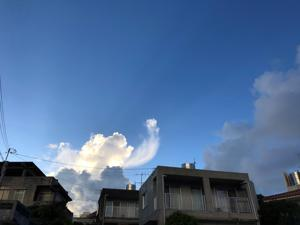
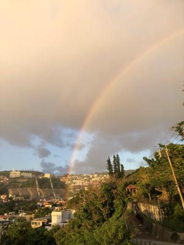
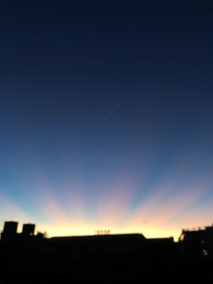

うるがいの話 ある日
最新: にわか雨の中の虹【うるがいの話 ある日】とは 一日だけのプログです
『うるがいの話』の最新一日だけのプログで、通信料が少なく経済的だ。カニの画像をクリックすると全ての日付が載る『うるがいの話』サイトを表示します
|
|
【うるがいの話】 うるがい(ｳﾙｶﾞｲ urugai)とは、『もずくがに』の名前でとても大きくなります。 |
|---|---|
|
|
【カミマヤーの話】 猫のことを方言でマヤーといいます。カミマヤー（kamimayaa）とは、神の猫のことです。 |
|
【たながぁの音楽】 たながぁ（ﾀﾅｶﾞｰ tanagaa）とは手長えびのことで、何種類かあり大きいのは車 エビぐらいになります。 |

|
【ぶながぁの話】 ぶながぁ(ﾌﾞﾅｶﾞｰ bunagaa)とは、赤い髪の毛、赤い身体、そして身長は１ｍ２０ｃｍ ぐらい、川の蟹を食べているの目撃された。場所は沖縄県国頭郡大宜味村のと ある村僕の隣近所に住んでいる爺さんから、聞いた話です。 |
|
|
【ギーマの話】 ギーマ(giima)とは、山原の里山に咲くスズランに似た、 花を付けます。実は食べられます、 気が付くと口の周りが紫になっています。 |
2022年08月17日 (水）にわか雨の中の虹
15:56
  
夕方、ジョギングに出掛けるとにわか雨が降っている。直ぐに止むだろうと傘
をもってウォーキングに変更、そしてほどなくして雨は止み青空になる。金城
ダムを過ぎた辺りから小さな小さな、雨が・・・、そして地獄坂を登っている
とにわか雨になる。さて、太陽の反対側には虹があるかなと振り向くと綺麗な
虹が見えた。ついでに、 １０秒ほどの動画を撮った。
コドモが、今日歯医者へ行く予定だったが歯医者さんがコロナに感染したので
三週間延期になったと言った。ほうー、私は来週定期点検のため近所にある歯
医者へ行くよていだが。ネットで『ちむどんどんは「脚本の論理性が崩壊」
礒崎元農水副大臣が苦言「NHKは猛省する必要があります」』というのがあっ
たが、私も多少思うのである。
１５時５１分 ビットコインの総資産 ￥９、４８４↑